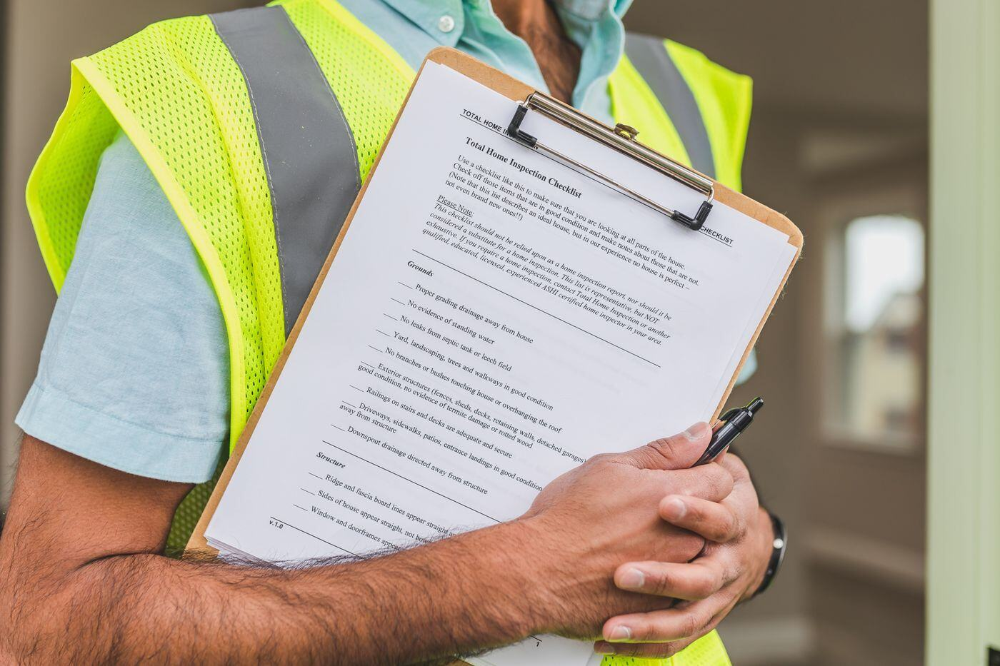
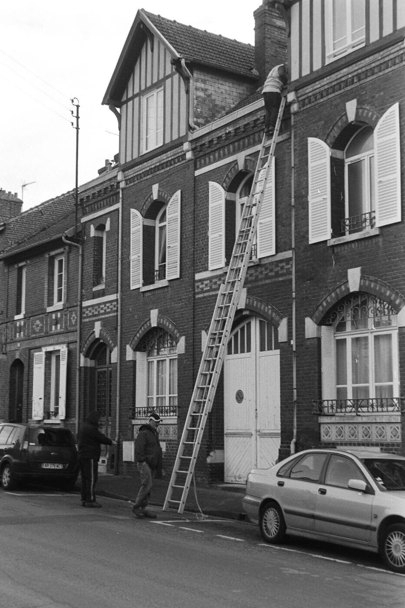
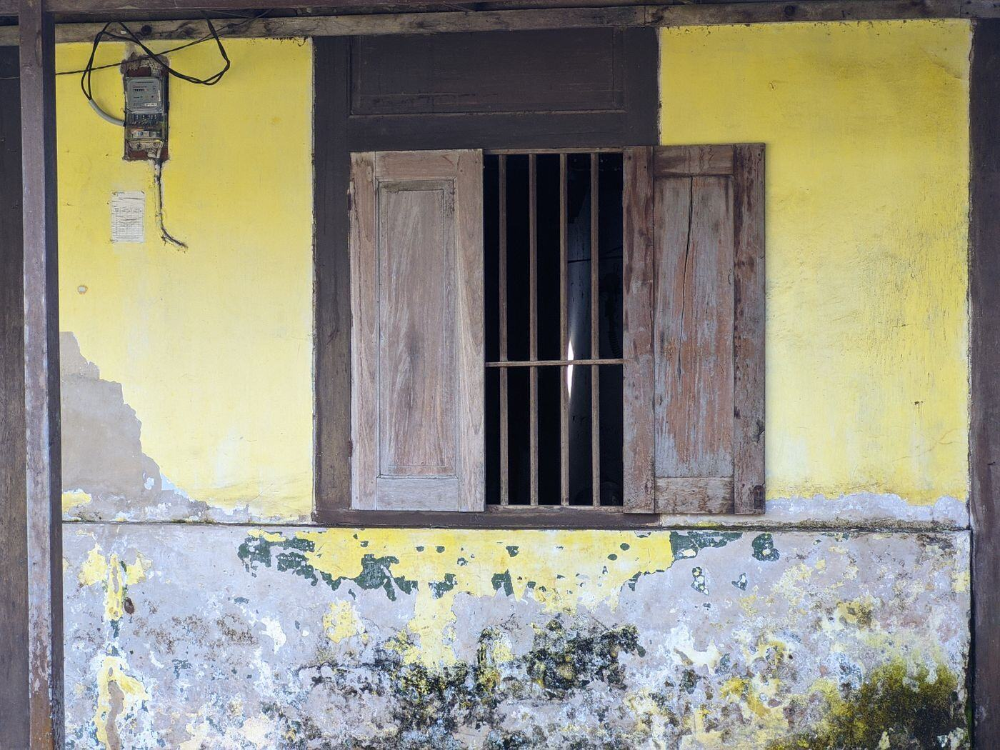

Lead Abatement in Cleveland, OH
About 80 percent of Cleveland homes were built before 1980, which means toxic lead paint is a fair assumption in much of the city until a test says otherwise. Whether you found peeling paint on a porch, received a rental notice or plan to remodel, start by describing what you see and we will point you to the right lead service.
Request a call
Describe what you are seeing in the house and we will follow up. Prefer to talk? Call (877) 378-5996.
What toxic lead abatement actually covers
Most people searching for lead abatement are really trying to answer a smaller question first: does my house have a lead problem, and what kind? The word covers a chain of separate services. A lead paint inspection finds lead paint. A risk assessment finds hazards. Abatement itself, meaning lead paint removal, replacement, enclosure or encapsulation, is the permanent fix, and clearance testing confirms the dust is gone afterward.
Cleveland adds a local layer. The city's own Lead Safe Program says rental properties built before 1978 must obtain a lead safe certification or an exemption, and the city presumes those rentals contain lead-based paint. Owner-occupied homes are not required to certify, but they face the same paint, the same dust and the same remodeling risks.
Ohio also controls who may do this work. State rules require a license for lead inspections, risk assessments and clearance exams, so one of the first questions to ask anyone is for their license.

What are you dealing with?
Most people do not know which lead service they need. Pick the situation that sounds like yours.
Lead services in Cleveland
Each page explains what the service is, when it is used and what to ask before you hire.

Lead Paint Inspection and Testing
Surface-by-surface testing that shows which painted parts of a Cleveland home contain lead.
Lead Risk Assessment
A licensed assessment of paint, dust and soil hazards, and the document Cleveland rental owners need first.
Lead Dust and Soil Testing
Lab-analyzed dust wipes and soil samples for the hazards you cannot see.

Lead Paint Removal and Abatement
Permanent elimination of lead paint hazards by removal, replacement, enclosure or encapsulation.

Lead Paint Encapsulation and Enclosure
Sealing or covering lead paint with a durable barrier when removal is not the best fit.

Lead-Safe Window and Door Replacement
Replacing the old painted sashes, frames and doors where lead dust is made every day.

Lead Clearance Testing and Cleanup
Specialized cleanup and a lab-backed check that the dust is actually gone.

Lead Safe Certificate Help for Cleveland Rentals
Walk through Cleveland's lead safe certification for pre-1978 rental properties.
Cleveland neighborhoods we cover
Local pages for older housing areas on both sides of the river, each written around that neighborhood's history and housing.

Ohio City
Lead paint testing and abatement for Ohio City homes.

Tremont
Lead paint testing and abatement for Tremont homes.

Slavic Village
Lead paint testing and abatement for Slavic Village homes.

Detroit-Shoreway
Lead paint testing and abatement for Detroit-Shoreway homes.
Collinwood
Lead paint testing and abatement for Collinwood homes.

Old Brooklyn
Lead paint testing and abatement for Old Brooklyn homes.

Glenville
Lead paint testing and abatement for Glenville homes.

Clark-Fulton
Lead paint testing and abatement for Clark-Fulton homes.
Guides for figuring it out
Is It Lead Paint? How to Tell
What to look for, what you cannot tell by eye, and what to do before you touch the paint.

Testing, Abatement or Renovation?
A plain-language guide to which lead service fits which situation.
High Blood Lead Level in a Child
Next steps at home after a child's blood lead result comes back above the reference value.

Renovating a Pre-1978 House
How the federal lead-safe renovation rule applies when you remodel an older Cleveland home.
Common questions
How do I know if I need lead abatement or just testing?
If you do not yet know whether the paint contains lead, start with testing. Abatement comes after an assessment finds a hazard. The guide on testing, abatement or renovation matches common situations to services.
Does my Cleveland house have lead paint?
If it was built before 1978, it might. The City of Cleveland notes that about 80 percent of homes in the city were built before 1980, and houses built after 1978 are exempt from the city certificate law.
Is lead abatement different from a renovation?
Yes. Abatement is done to eliminate lead hazards. Renovation disturbs paint as a side effect and needs lead-safe work practices. See renovating a pre-1978 Cleveland house.
Who can test for lead in Ohio?
Ohio requires a lead inspector or lead risk assessor license for lead inspections and risk assessments, so ask for the license number before you schedule.